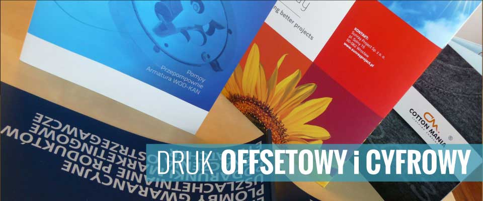

Szyldy reklamowe
Wrocław i cała Polska
- 


Profesjonalnie zaprojektowany szyld reklamowy w foxmedia.com.pl to jedna z najprostszych i najskuteczniejszych form reklamy zewnętrznej. Skutecznie przyciąga uwagę, zwiększa rozpoznawalność marki i pomaga klientom łatwo odnaleźć Twoją firmę. W InstalPrint projektujemy i wykonujemy szyldy reklamowe we Wrocławiu i na terenie całej Polski, łącząc nowoczesny design z trwałością i funkcjonalnością.
Szyld to nośnik informacji montowany zwykle na elewacji budynku, nad wejściem do lokalu, na ogrodzeniu lub przy drodze. Może zawierać logo, nazwę firmy, hasło reklamowe albo dane kontaktowe. Dzięki prostej formie i odpowiedniej lokalizacji pełni zarówno rolę informacyjną, jak i wizerunkową.
Szyldy mogą różnić się materiałami, konstrukcją i podświetleniem – od lekkich płyt PCV po nowoczesne szyldy podświetlane LED.
Oferujemy kompleksową realizację szyldów – od projektu po montaż. Wykonujemy m.in.:
Szyld to nie tylko ozdoba – to skuteczne narzędzie marketingu. Jego zalety to:
Realizujemy szyldy reklamowe dla:
Działamy na terenie Wrocławia i Dolnego Śląska, a także w całej Polsce. Oferujemy:
Każdy szyld tworzymy indywidualnie – dopasowując go do stylu i wartości Twojej firmy. Możesz dostarczyć gotowy projekt lub zlecić nam wykonanie od podstaw – przygotujemy szyld, który będzie Twoją najlepszą wizytówką.
Jeśli interesuje Cię trwały i estetyczny szyld reklamowy we Wrocławiu lub w innym mieście, jesteśmy do dyspozycji. instalprint.pl to producent szyldów, który łączy doświadczenie, jakość i terminowość.
Zadzwoń lub napisz – bezpłatnie doradzimy, przygotujemy projekt i wycenę.
Twoja firma zasługuje na to, by być widoczna!
Copyright 2008-2024 by Instalprint | Wszystkie prawa zastrzeżone